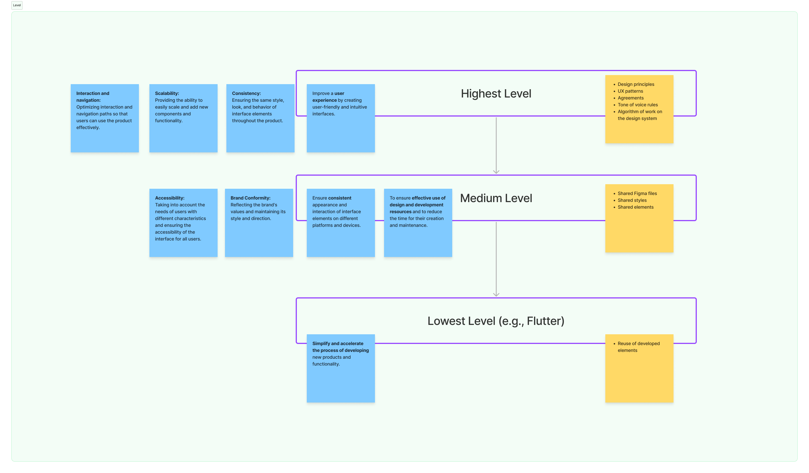
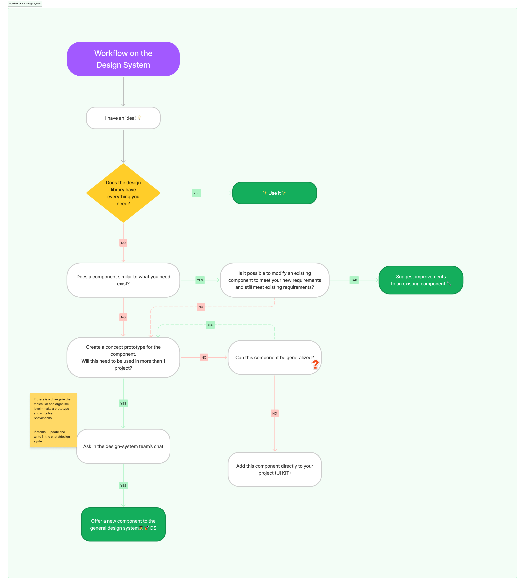

Silpo Design System — founded without a top-down mandate.
A cross-platform DS for Silpo’s consumer products covering web and a Flutter mobile app. Started from guerrilla interviews, validated with C-level stakeholders, shipped with WCAG 2.1 AA on day one and three abstraction levels designed to travel across very different codebases.

My initiative — not an assignment.
Silpo had two surfaces that mattered to customers — a web shop and a Flutter mobile app — but every team was rebuilding the same components, twice, in slightly different ways. There was no top-down mandate to fix that. There was just visible friction, slow Time to Market, and an obvious opening.
I framed the system as a way to improve Time to Market for product features, with a side-effect dividend: designers would get research time back. That framing got buy-in from the C-level. The actual work started.
Two-stage research, then RICE, then ship.
- Guerrilla interviewsFast quality-of-life feedback from designers and front-end engineers — what works today, what doesn’t.
- Stakeholder interviewsStructured conversations with CTO, Solution Architect, Front-end Architect, Flutter Architect and Head of Design — to lock in requirements and constraints.
- Reference scanGoogle Material, Amazon Cloudscape, IBM Carbon, Shopify Polaris — for IA patterns and governance.
- RICE prioritisationReach × Impact × Confidence / Effort. Made the roadmap defensible to anyone who asked.
- WCAG 2.1 AA at the startA hard requirement from day one — not a final-stage checklist.
Three abstraction levels, each for a different reality.
The system was structured around three abstraction levels so it could travel across very different codebases without forcing the same artefacts onto every team.
- Lowest — code reuseFull code reuse for products on the same platform (e.g. all Flutter apps). Maximum efficiency where stacks align.
- Middle — components + patternsShared visual components and patterns across web and mobile, implemented per-platform.
- Highest — patterns onlyPattern-level alignment where codebases diverge too much. Keeps the brand consistent without forcing component-level lock-in.

A documented, accessible, workshop-supported system.
- DocumentationZeroheight for foundations and patterns. Storybook for the live component reality. Figma as the design tooling.
- Workshops & trainingRun for both designers and engineers. A dedicated channel for knowledge exchange and Q&A.
- WCAG 2.1 AA complianceToken-level colour contrast, focus states, motion preferences — baked into the foundation layer.
- Governance for changeMonthly changelog ritual, version-history saves before publishing, opt-in patterns over mandatory ones.
- Six design principlesClarity, Consistency, Scalability, Research, Collaboration, Beautiful expression.

Faster shipping, fewer mistakes, happier teams.
The visible outcomes were faster delivery of new product features, fewer consistency errors between web and mobile, and a happier design + engineering team. The invisible one — that I now know matters most — was that designers got research time back.
What I took into BOS DS three years later.
- Stakeholder alignment is non-negotiableA DS without C-level buy-in is just a Figma library that ages quickly.
- Iterate over perfectingA v1 that ships and gets used beats a v3 still in review. Versioning is part of the design.
- Designers and engineers are both usersQA and BA, too. Designing for one group at the expense of another rots adoption.